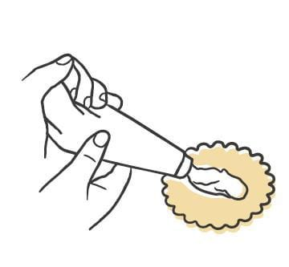
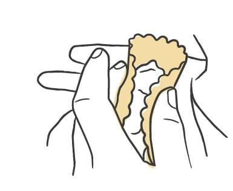
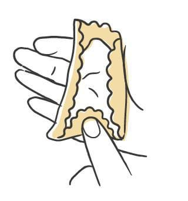
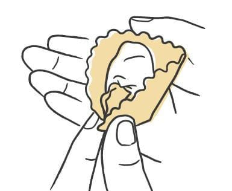
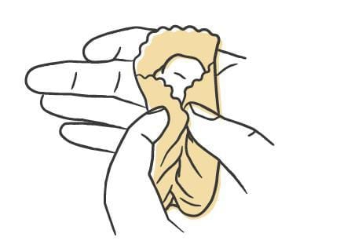
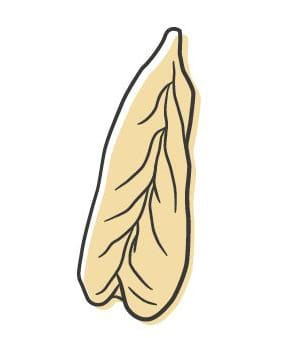

Pasta / Shapes
Culurgiones
- Dough
- Semolina Dough
- Region
- Sardinia, with the braided teardrop form centered on the mountainous east near Nuoro
- Rest
- 45 minutes to 1 hour uncovered in the refrigerator
- Source
- Pasta, Missy Robbins
- Formed
- stuffed
Shaping






Method
- Make the semolina dough, then roll and sheet it.
- Dust a wooden board with 00 flour. Cover a sheet pan with parchment, then dust the parchment with semolina.
- Lay one sheet on the board. Cut rounds with a #90 (3 1/2-inch) fluted pastry cutter, leaving 1/8 inch between them.
- Spoon about 16 g of filling into the center of each round.
- If the dough feels dry rather than tacky, mist the rounds with a spray bottle held 8 to 10 inches above the board. Skip this if the dough is already tacky.
- Cup a round in your palm and bring the sides up with your other hand so it takes a taco-like form.
- Starting at one end, use your index finger to fold that end of the circle in over the filling.
- With your middle finger and thumb, squeeze the two sides of dough closed over that folded end into a triangular closure, then push the top of the closure down into the filling with your index finger. Keep repeating the fold and pinch down the length of the seam to build a fishtail braid, and pinch the far end closed into a small tail.
- Set the piece on the prepared pan. Fill and braid the rest of the rounds, keeping them in a single layer, and dust the pan again with semolina.
- Repeat with the remaining sheets.
- Refrigerate uncovered for 45 minutes to 1 hour to dry. Covered pieces sweat and get too wet. To hold longer, lay plastic wrap loosely over the pan and refrigerate up to 8 hours.
Notes
- Cut from 3 1/2-inch rounds (#90 fluted cutter), spaced 1/8 inch apart. That is the largest round called for among these shapes.
- Filling per piece: about 16 g, spooned rather than piped. This is the only shape in the group with the filling given as a weight.
- Seal geometry: no fold-and-pinch edge. The round is cupped into a taco, one end is folded in over the filling, and then alternating pinches up the seam build a fishtail braid that finishes in a small pinched tail.
- Needs the semolina dough, not an egg dough.
- The sheets and the filling both soften as they sit out. Keep them in the refrigerator and pull them in batches.
- Storage: 45 minutes to 1 hour uncovered to dry, then up to 8 hours refrigerated under loose plastic.
- Filling is usually greens or fresh herbs with potato and both fresh and aged pecorino sardo.
- Served in a simple tomato sauce, finished with mint and fiore sardo.